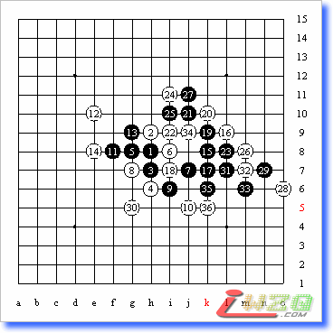

第二轮就遇到李非。让我有点措手不及，因为我根本不知道她会参加男子组的比赛，除了知道她棋力很强，人很漂亮外，其它的完全不了解。

时间：2007年10月3日
地点：天津市青年宫
07年全国五子棋锦标赛第二轮
黑方：李非（交换） 白方：贺骞
布局：松月 5A=F7 黑35后白投了
布局松月是因为这次全锦赛，我完全是抱着学习的态度去的，只准备了松月一打和几个银月的变化。交换是在意料之中的，她给的两打是一打G8和F7三打，松月三打的话，无论是黑还是白，我估计一共还没赢过30局，干脆就留下了一打，或许还能给她施加点心理压力呢：）
行棋至14手都是定式，12，14是个比较冷偏的防守。松月一打都有地毯谱了，完全是赌她对这个12不熟悉。
15出谱了，当时心里挺高兴的。还真赌对了，她真的记不起谱了。16。18。20必然，对手下至21手我才发现我低估了她的攻击能力。22手长考了10多分钟吧，完全是冲着I11的三三禁点去的，感觉自己要输的样子，想做个禁手来牵制。局终后，我老师告诉我22手是必败的。
如果22走J11活三，23防下的话，白棋有一些强攻的手段，防上的最强。那样白棋会很苦，但应该没有必败吧。
实战的23也没走出杀招，如果黑棋23手走E7活三解禁，黑石分析黑棋右面局部有杀。26手是唯一防，27手意料之外的一手棋，当时只顾当算27手防下面后有一串的反先。再到后面就算不清楚了，鬼才知道会发生什么。28手又是重大失误，这里28不冲效果更好一些，当时也没多想，就想着给对手做个四四禁就瞎冲了
局后分析如果在43位J9单防的话，黑棋也没什么手段。30手是我长考20分钟的结果，我几乎不能原谅自己了，正所谓长考出臭招。当时左算右算，就只算到L7点冲4活三后，J9是四四禁手点，她不能胜。如果她走J9冲43的话，我防在J8正好又可以反四，然后再做L7的四四禁。就没有危险了。当时自以为是妙手，有点迫不及待哈哈。以下黑棋VCF解禁胜定。
说心里话，这局棋输后心情比较沮丧。如果28。30老老实实地防守的话，也许还能多支撑几手吧。
下完之后才发现我和她的差距真的很大，不足的地方太多了。
一：我的计算力和白痴没什么两样。
二：比赛经验不足。
三：性子比较毛燥。
四：没有拼搏精神。
搞笑的是她最后说：师弟，承让了~
我承让了吗？我会承让吗？
我晕！~
（转载自中国游戏中心五子棋论坛）
搞笑的是她最后说：师弟，承让了~
=======================================
的确很搞笑